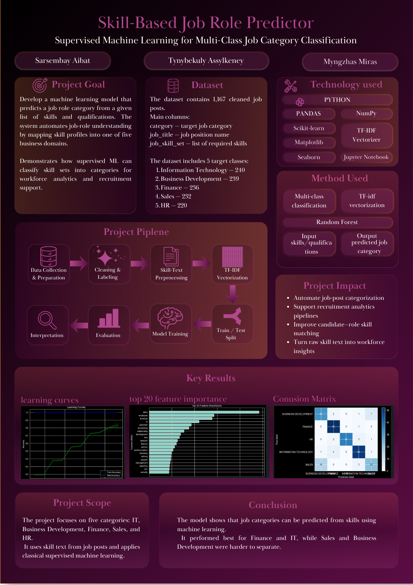

Artificial Intelligence Final Project
Supervised Machine Learning for Multi-Class Job Category Classification
About Project
Skill-Based Job Role Predictor is a supervised machine learning project that predicts a job category from a given list of skills and qualifications.
The model takes skills as input and predicts one of five categories: Information Technology, Business Development, Finance, Sales, and HR.
The project uses TF-IDF vectorization to convert skill text into numerical features, then trains classical machine learning models such as Random Forest, SVM, and Naive Bayes.
Our Team
Team Member
Team Member
Team Member
Poster

Open Poster PNGDataset
Cleaned Job Posts
Target Classes
Main Columns
Graph Results
Main Results
Overall Accuracy
Finance: 98.1%
Information Technology: 89.3%
HR: 85.7%
Business Development: 76.2%
Sales: 53.7%
Video